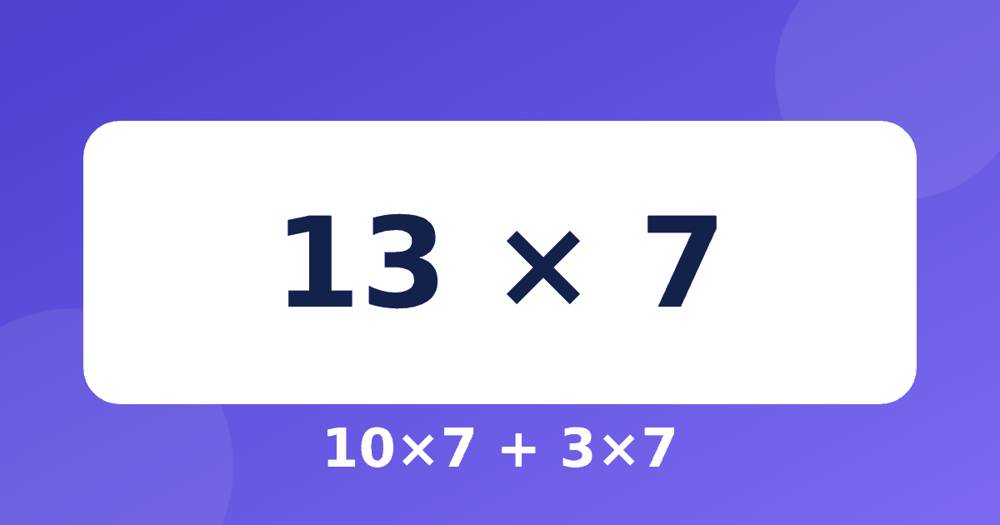

Расширенная таблица умножения: 12, 13, 14, 15 и дальше без лишней нагрузки

Родители нередко видят в интернете «таблицу умножения до 20» и задаются вопросом: не отстаёт ли ребёнок, если знает только до 10? Спокойный ответ такой: не отстаёт. Расширенная таблица не входит в обязательный минимум, но её можно использовать как бонус и как тренировку мышления. Разберём, зачем она нужна, как её освоить и как не перегрузить школьника.
Нужна ли таблица умножения до 20 в школе
В начальной школе основным считается умножение в пределах таблицы до 10. Именно она нужна для деления, столбиков и задач. Что и когда проходят в вашем классе, зависит от программы, поэтому ориентируйтесь на школьные материалы. Если интересно, на что опираться по классам, посмотрите статью про таблицу умножения в 4 классе.
Значит ли это, что расширенная таблица бесполезна? Нет. Знание ответов на 12 × 6 или 15 × 4 пригодится в быту: в дюжинах, в расчёте минут и в покупках. А приём для числа 11 отдельно описан в статье про умножение на 11, и его тоже можно взять как игру. Но заучивать 100 новых ответов подряд не нужно. Достаточно уметь быстро их получать. Основу при этом лучше проверить в тренажёре «Умножение».
Главный приём: разложение на десяток и остаток
Любое число от 11 до 19 — это десяток плюс единицы. Поэтому 13 × 7 удобно считать так: 10 × 7 = 70, 3 × 7 = 21, вместе 70 + 21 = 91. Ребёнок не запоминает новый ответ, а собирает его из двух знакомых.
- 14 × 6 = 10 × 6 + 4 × 6 = 60 + 24 = 84.
- 17 × 3 = 10 × 3 + 7 × 3 = 30 + 21 = 51.
- 16 × 5 = 10 × 5 + 6 × 5 = 50 + 30 = 80.
Этот приём опирается на таблицу до 10 и на счёт десятков. Если хотя бы одно из двух слабое, лучше вернуться на шаг назад. Подробнее о том, как закрепить базу, написано в статье как выучить таблицу умножения.
Таблица умножения на 12: опорный случай
Число 12 встречается чаще других: в дюжине 12 предметов, в сутках две дюжины часов. Таблица умножения на 12 строится на том же разложении: 12 × 4 = 40 + 8 = 48, 12 × 6 = 60 + 12 = 72, 12 × 7 = 70 + 14 = 84, 12 × 8 = 80 + 16 = 96, 12 × 9 = 90 + 18 = 108.
Можно заметить удобную закономерность: каждый следующий ответ больше предыдущего ровно на 12. Если известно, что 12 × 5 = 60, то 12 × 6 = 60 + 12 = 72. А 12 × 12 = 144 получается из 12 × 10 = 120 и 12 × 2 = 24.
Умножение на 13, 14, 15: что запомнить, а что считать
Для 15 есть удобная опора: это полтора десятка. Поэтому 15 × 4 = 60, а 15 × 6 = 90. Ребёнок может думать так: 10 × 6 = 60, половина от 60 это 30, вместе 90. Пример 15 × 7 = 70 + 35 = 105.
Для 13 и 14 лучше не искать особых правил, а пользоваться общим разложением: 13 × 4 = 40 + 12 = 52, 14 × 8 = 80 + 32 = 112. Такие вычисления заодно тренируют сложение в уме, о котором рассказано в статье про счёт по разрядам.
Как не перегрузить ребёнка
Начинайте с расширенной таблицы только тогда, когда обычная идёт без заметных пауз. Проверить это можно в тренажёре: там есть итоговая проверка, которая показывает, какие примеры ещё вызывают затруднения. Пять блоков тренажёра бесплатны, а до 10 минут в день можно заниматься без оплаты.
Дальше действуйте по шагам: одна неделя на таблицу на 12, ещё одна на 15, потом по одному новому числу, и только если ребёнку интересно. Сомневаетесь, сколько времени отводить, прочитайте материал про время занятий в день.
Частые вопросы
Нужно ли заучивать таблицу умножения до 20 наизусть?
Нет, это необязательно. Полезнее уверенно знать таблицу до 10 и уметь быстро раскладывать числа: так ответ находится за несколько секунд.
С какого возраста можно показывать умножение на 12 и 15?
Обычно после того, как ребёнок освоил основную таблицу, то есть примерно в 3–4 классе. Конкретные сроки у всех свои, поэтому ориентируйтесь на уверенность, а не на возраст.
Как проверить результат умножения на 13 или 14?
Можно разложить пример другим способом. Например, 14 × 6 = 84 проверяется как 7 × 6 × 2: 42 × 2 = 84. Совпадение двух способов говорит, что ответ верный.
Расширенная таблица хороша как повод показать, что умножение держится на нескольких простых мыслях, а не на сотнях ответов в памяти. Если ребёнок объясняет, как получил 13 × 7 = 91, он понимает материал лучше, чем тот, кто просто знает цифру. Для регулярной практики подойдут короткие занятия в тренажёре «Умножение».